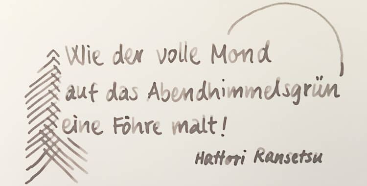
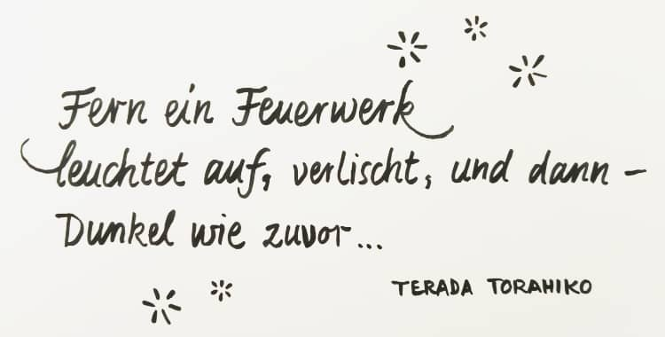

Manches soll nicht gleich in der Timeline versinken …
Auf dieser Website ist Raum für das, wofür meinem Mastodon-Account @charakterziffer zu kurzlebig ist. Mein Blog ist als Plus zu meinen Posts gedacht, eben „@cz+“. // Die letzten drei Artikel:
Aus der Bibliothek habe ich mir gerade zwei kleine, hübsche Bücher mit japanischen Kurzgedichten ausgeliehen. Diese Haikus haben sich im 14./15. Jahrhundert entwickelt. Ihre Kürze ist typisch für die japanische Kultur, die ja in vielen Bereichen versucht, vollendet Schönes mit geringen Mitteln und auf kleinem Raum zu schaffen (wie bei der Tuschemalerei Sumi-e, der Blumensteckkunst Ikebana oder kleinen, geschnitzten Netsuke).
Ein Haiku spielt mit dem Unausgesprochenen und Unvollendeten, und deutet über den eigentlichen Inhalt hinaus ein größeres Thema an. Im strengen Sinn beschreiben Haikus objektiv eine Naturstimmung und orientieren sich an den fünf Jahreszeiten (Neujahr, Frühling, Sommer, Herbst und Winter):
Kaum war er erblüht,
hat den Mohn der Wind verweht,
noch am gleichen Tag!
— Kobayashi Issa
Thematisch sind die Kurzgedichte spätestens zu ihrer Blütezeit im 17. Jahrhundert vielseitiger geworden, ihre feste Form hat sich allerdings nicht verändert: Ein Haiku hat immer drei Zeilen mit bestimmter Silbenzahl. Zuerst fünf Silben, dann sieben Silben, schließlich wieder fünf Silben.
Laut Gerolf Coudenhove, dem Übersetzer und Herausgeber der Haiku-Bücher, haben die Kurzgedichte im Japanischen außerdem einen typischen Rhythmus. Sie werden auch bewusst rhythmisch vorgelesen. Ins Deutsche lässt sich das am besten mit einem Wechsel von betonten (—) und unbetonten Silben (◡) übertragen:
— ◡ — ◡ —
— ◡ — ◡ — ◡ —
— ◡ — ◡ —
Haikus zu schreiben ist wirklich weit verbreitet, es gibt Millionen davon! Ich erinnere mich an eine Deutschstunde, in der wir diese Gedichtform selbst ausprobiert haben. Die kurze, fest Form finde ich sehr inspirierend: Sie beschränkt die Möglichkeiten, regt an zu Worttüffteleien und verhindert gleichzeitig, dass man sich in ausufernder Weitschweifigkeit verläuft. Hier ein eigenes Haiku:
In dem dicken Buch
zwischen schwerer Weisheit klebt
flach ein Käferrest.
Mir gefällt, wie die nüchterne, kurze Beschreibung Raum lässt für hintergründige Interpretationen. Es macht mir außerdem Freude, einen kleinen, konkreten Moment im Vers festzuhalten und zu versuchen, die Stimmung in wenigen Worten einzufangen.
Wegen ihrer Kürze eignen sich Haikus wunderbar als Texte für Kalligrafie. Sie sind schnell geschrieben, lassen sich mit ihren bildhaften Beschreibungen leicht gestalten und machen durch die lyrische Form auch inhaltlich etwas her. Wie wäre es zum Beispiel auf einer handgeschriebenen Grußkarte?


Ich hoffe, dieser Blogartikel regt euch an, ein paar Haikus zu lesen und vielleicht sogar selbst eines zu schreiben. Es ist wirklich nicht so schwer!
Ein „Colapen“ ist ein Schreibgerät mit einer gefalteten Blechfeder, gebastelt aus einer Coladose. Schon vor einer Weile habe ich einen Blogartikel dazu gefunden und mir nun selbst solche Faltfedern gebastelt. Sie eignen sich gut zum groben, experimentellen Schreiben. Hier meine Anleitung:
Stäbe für den Griff (z. B. Buntstift oder Essstäbchen)
Klebeband/Washi-Tape
evtl. Skalpell oder Nadel
spitze Schere
wischfester Folienstift/Permanent-Marker
Lineal
feines Schleifpapier
evtl. ein Zahnstocher
evtl. kleine Zange
Außerdem sehr wichtig: Handschuhe zum Schutz vor Schnitten!
⚠ Achtung: Die Blechkanten der aufgeschnittenen Dose sind sehr scharf! Vorsicht beim Hantieren mit dem Blech, damit man sich nicht schneidet.
2. Handschuhe anziehen! Dann die Dose an der oberen Kante aufschneiden. Am besten zuerst mit einem Skalpell oder einer Nadel eine Öffnung stechen, dann mit der Schere rundherum den Dosendeckel abschneiden.
3. Einen Schnitt entlang der Dosenhöhe machen, dann auch den Boden abschneiden. So entsteht ein rechteckiges Stück Blech (mit scharfen Kanten!).
4. Für die spätere Feder ein Rechteck aufzeichnen (auf die Blechseite, die später innen sein soll). Es misst etwa 3 × 5 cm. An einer kurzen Seite die Ecken aussparen, an diesem schmalen Stück wird die Feder an den Griff geklebt.
5. Die Blechform ausschneiden. Danach gern die Gelegenheit nutzen, um dem Arbeitsplatz von fiesen Blechspänen zu befreien, beispielsweise mit Hilfe eines Stückchens Klebeband.
6. Für den Schaft habe ich ein Essstäbchen mit einem Sägemesser gekürzt, auch ein Buntstift bietet sich als Griffstück an. Das Blechteil vorsichtig um diesen Schaft biegen und nach und nach rund formen. Nicht wiederholt knicken, damit das Blech nicht bricht.
7. Die spätere Feder muss fest mit dem Griff verbunden sein, darum mit Klebeband oder bunten Washi-Tape ordentlich fixieren.
8. Die Feder mit der Schere in Form schneiden. Vorne empfehle ich eine flache Rundung und eine schmale Spitze.
9. Möglich sind aber ganz verschiedene Formen. Eine einzelne Getränkedose bietet ausreichend Material für mehrere Blechfedern, zum Beispiel auch für kamm-artige Federn, mit denen parallele Linien gezogen werden können. (Eine kleine Zange hilft beim Biegen oder Zusammenpressen)
10. Nochmal den Arbeitsplatz saubermachen, scharfe Bleckstücke und Spreisel beiseite räumen! Dann geht es gern ohne Handschuhe weiter.
Damit die Feder gut Tinte aufnimmt und diese dann schön herausfließt, sollte zwischen den Blechhälften der Feder ein sehr schmaler Spalt sein. Der lässt sich mit einem Zahnstocher formen. Falls die Feder auf dem Papier kratzt, kann man sie mehrmals über feines Schleifpapier ziehen.
11. Zum Schreiben entweder die Feder in Tinte tauchen oder mit Hilfe eines Pinsels mit satter Wasserfarbe füllen.
12. Auf dem Papier ruhig erst ein bisschen ausprobieren, bis die Farbe gut aus der Feder läuft und die optimale Federhaltung für einen schönen Strichkontrast gefunden ist.
Weitere Anleitungen
Natürlich habe ich mir diesen Cola-Pen nicht selbst ausgedacht, sondern verschiedene Beschreibungen dazu gesucht. Leider habe ich wenig auf Deutsch gefunden, es war zu knapp oder zu blumig formuliert oder mit Werbung gepflastert. Gute Alternativen zu meiner Anleitung sind:
Minimalistisch in einem Bild (Archiv eines Etsy-Blogartikels von 2012)
Ausführliches YouTube-Video (10 Minuten, englisch, aber gut verständlich, lästige Werbung)
Englische und spanische Anleitung mit Fotos, zwei verschiedene Federfaltungen (die erste etwas komplizierter mit mehreren Blechschichten).
Mut zum Experimentieren
Feine Kalligrafie zaubert die Blechfeder nicht so gut und ordentlich aufs Papier wie eine „richtige“ Schreibfeder. Dafür kann man damit allerhand ausprobieren: Mit der Rundung der Feder schreiben, umgedreht mit der Spitze (geschlossenen Kante zum Papier), mit verschiedenen, ineinander laufenden Farben, …
Als kreativen Ansporn hatte ich mir vorgenommen, fürs Fenster meines Arbeitszimmers monatlich ein neues Bild zu malen. Es ist dann von außen sichtbar und erfreut vielleicht ein paar Passanten. Nach über zwei Jahren fürchte ich: Jetzt ist die Luft erst mal raus.
Ideen für Motive habe ich zwar einige, aber nicht jeden Monat ist mir danach, etwas zu malen. Zu oft fühlten sich die Fensterbilder in letzter Zeit wie eine lästige Pflicht an – und das ist nicht Sinn der Sache. Vielleicht sollte ich das Malen verspielter angehen, mehr Mut zum Unperfekten und Sinnfreien.
Das letzte Bild war übrigens der Versuch eines Porträts mit Ölfarben. Ich wurde im Laufe des Malens damit aber so unzufrieden, dass ich es kurzerhand völlig verschmiert habe. Ins Fenster hänge ich das nicht, außer ich übermale alles nochmal. Oder es landet im Müll. Ob das vor zu hohen Erwartungen schützt: Für den Müll malen?
Bei allem Frust übers missglückte Porträt sollte ich nicht vergessen, dass unter diesen zwölf Bildern auch einige sind, die mir recht gut gefallen. Die „erste Staffel“ meiner Fensterbilder habe ich übrigens vor anderthalb Jahren veröffentlicht.
Das Wort kombiniert Persönlichkeit (Charakter) mit Sachlichem (Ziffer). Zusammengesetzt ergibt sich ein Synonym für Mediävalziffer, eine Zahlenvariante mit Ober- und Unterlängen.
Schriftarten dieses Blogs
Wenn dein Browser eingebettete Schriften (WOFF2) unterstützt, dann liest du die Fließtexte hier in der Source Sans Pro von Paul D. Hunt, erschienen 2012 bei Adobe.
Die Überschriften sind aus der czSlab gesetzt, die ich für dieses Blog gestaltet habe. Sie orientiert sich an Yanones viel ausgefeilterer Antithesis von 2014.
§ 1 Externe Links · Dieses Blog verlinkt auf Websites Dritter. Zum Zeitpunkt der erstmaligen Verlinkung waren dort keine Rechtsverstöße ersichtlich. Da ich keinen Einfluss auf fremde Websites habe, kann ich für deren Inhalte und Gestaltung keine Haftung übernehmen. Sollte ich von Rechtsverstößen erfahren, entferne ich die Verlinkung unverzüglich. Eine ständige Kontrolle der externen Links ist ohne konkrete Hinweise aber nicht zumutbar.
§ 2 Datenschutzerklärung · Mir ist der Schutz deiner Daten sehr wichtig. Deshalb verzichte ich auf Cookies, vermeide möglichst Dienste von Drittanbietern und erhebe so wenige Daten wie es geht. Diese Website kann ohne die Angabe persönlicher Daten genutzt werden.
Die einzige Ausnahme sind Kommentare. Wenn du einen meiner Texte kommentierst, bekomme ich die eingegebenen Daten und eine Zeitangabe per (prinzipiell unsicherer) E-Mail zugestellt. Falls dein Kommentar sachlich zur Diskussion beiträgt, ergänze ich ihn öffentlich sichtbar unter dem entsprechenden Artikel. Dabei sind sämtliche Angaben freiwillig (Name, Website, Mailadresse, Kommentar) – auch anonyme Kommentare sind möglich.
§ 3 Widerspruch gegen Direktwerbung · Die Verwendung meiner Kontaktdaten zur gewerblichen Werbung ist ausdrücklich nicht erwünscht; ich widerspreche hiermit jeder kommerziellen Nutzung und Weitergabe meiner Daten (gemäß § 21 DSGVO). // Über private Fanpost freue ich mich allerdings sehr und antworte darauf mit großem Vergnügen!
 @charak
@charak{kind=link}